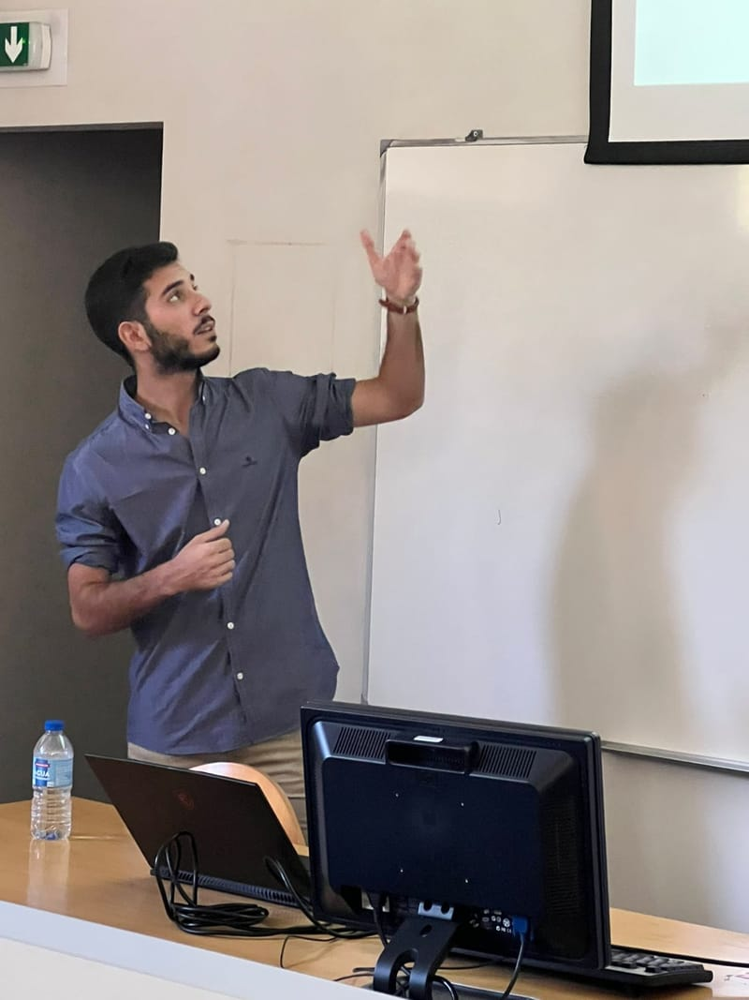

Experience
Three years of applied machine learning in industry, after three years of deep learning research at INESC TEC.
Work and research
-
to 3 years 1 month
Data Scientist
Enlitia, Porto, remote, full time
Built machine learning forecasting for wind and solar power, working with interdisciplinary teams so the predictions could support day-to-day operations and strategic decisions.
- Designed, developed and deployed models for wind and solar power forecasting
- Built reusable machine learning frameworks for tabular energy datasets
- Analysed, processed and validated renewable energy data with SQL and Pandas
- Built and maintained Grafana dashboards to monitor model performance and energy trends
- Applied natural language processing to build classification models for text data
- Migrated models and algorithms from local environments to the Snowflake cloud platform
Python, Keras, TensorFlow, PyTorch, SQL, Pandas, Snowflake, Grafana, NLP
-
to 7 months
Research Fellow, Deep Learning
INESC TEC, Porto, hybrid
Research grant on lightweight and fair deep learning for embedded, resource-constrained devices, within the NewSpacePortugal project. The goal was to compress models enough for real-time, on-device use without losing performance.
- Built a response-based knowledge distillation pipeline for facial emotion recognition. The compressed student reached 91.3% accuracy on CK+, 2 percentage points above the same model trained without distillation
- Trained ResNet-34 and ResNet-50 teachers (85.4% on RAF-DB, 100% on CK+), controlling overfitting with pre-trained backbones, progressive layer freezing and label smoothing
- Compared lightweight students (ResNet-18, MobileNetV2) trained on minimal landmark-based face representations
- Benchmarked knowledge distillation, pruning and quantization
- Evaluated bias, fairness and overestimation, beyond the usual accuracy versus complexity trade-off
Python, PyTorch, TensorFlow, OpenCV, MediaPipe, model compression, computer vision
-
to 9 months
MSc thesis researcher
INESC TEC, Porto
Thesis: Deep Neural Networks for Face-based Emotion Recognition, graded 19/20. Compared traditional methods, CNNs, transfer learning and Vision Transformers across several benchmark datasets, and studied landmark-based face representations for efficient emotion classification, with state-of-the-art results on several public datasets.
Python, TensorFlow, Keras, PyTorch, OpenCV, scikit-learn
-
to 8 months
Research intern
INESC TEC, Porto
Project: presentation attack detection for face recognition, with explainability. Built deep learning models that decide whether a face sample is genuine or a spoof, evaluated them, and applied explainability methods to understand their decisions. Graded 19/20.
Python, deep learning, explainable AI

Publication
-
Exploring Optimal Strategies for Small Hydro Power Forecasting: Training Periods and Methodological Variations
How to choose the training window for small hydro power forecasting in Portugal. Using kernel density regression on historical production and calendar data, I compared clustering approaches (K-Means, DTW and a new “K-Means Alike” method) to select training periods. K-Means Alike with a two-month window improved accuracy while reducing computation.
Read the paper